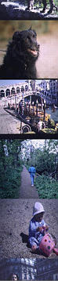

 |
After finding some good top hits using the textual annotations, we may again extend the initially retrieved set using its visual attributes, by giving relevance feedback on the four faces found.
BTW, if you were surprised by the dog... well, the woman has been annotated as "a woman dressed in black lying on bed", and the dog as "black dog", so the system decides these are similar images.
| Prev | Next |
 Home: DEMO - The Mirror MMDBMS architecture
Home: DEMO - The Mirror MMDBMS architecture
Last updated: December 9, 1999
Maintained by: arjen@acm.org